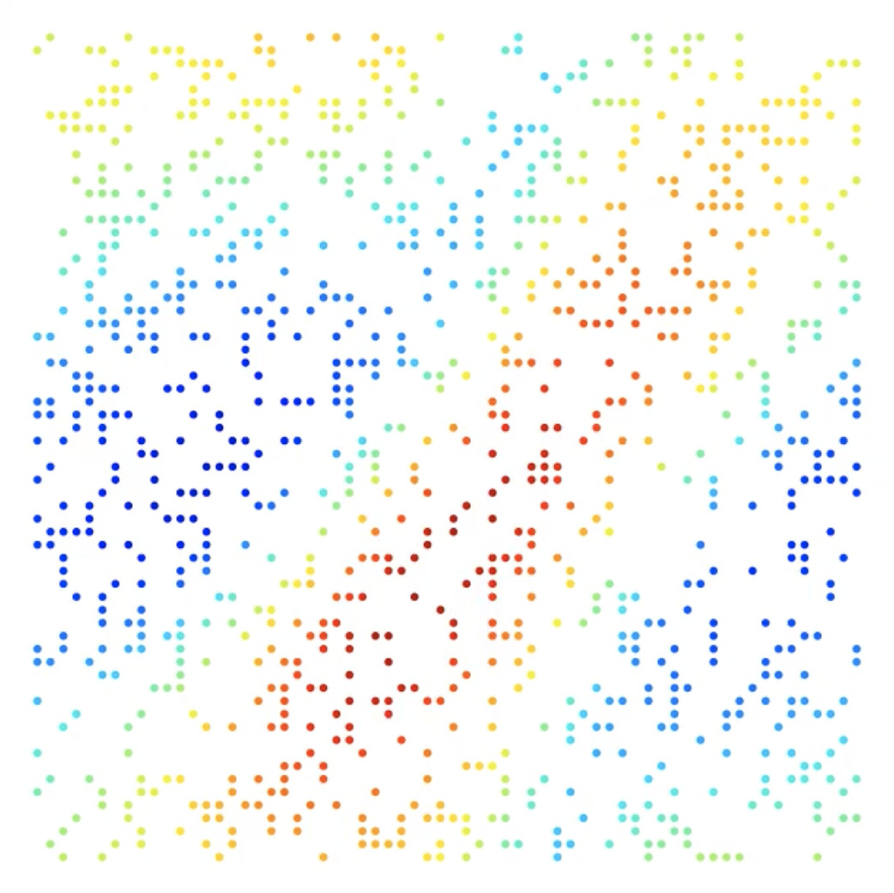
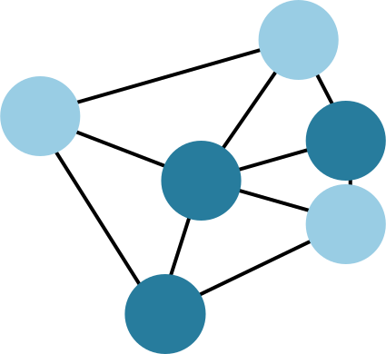

<!DOCTYPE html>
<html lang="en">
<head>
    <meta charset="UTF-8">
    <title>Title</title>
    <link rel="stylesheet" href="../../../css/custom.css">
    <script src="https://d3js.org/d3.v5.min.js"></script>
    <script type="text/javascript"
            src="https://cdnjs.cloudflare.com/ajax/libs/mathjax/2.7.0/MathJax.js?config=TeX-MML-AM_SVG">
        MathJax.Hub.Config({
            tex2jax: {
                inlineMath: [['$', '$'], ['\\(', '\\)']],
                processEscapes: true
            }
        });
    </script>
</head>
<body>
<script>
    var margins = {
        top: 10,
        bottom: 10,
        left: 10,
        right: 10
    }

    var width = window.innerWidth;
    var height = window.innerHeight;


    var color = d3.scaleOrdinal(d3.schemeCategory10);

    var graph = d3.select("body").append("svg")
        .attr("preserveAspectRatio", "xMinYMin meet")
        .attr("viewBox", [0, 0, width, height]);

    xScale = d3.scaleLinear()
        .domain([0, 1])
        .range([margins.left, width - margins.right]);
    yScale = d3.scaleLinear()
        .domain([0, 1])
        .range([margins.top, height - margins.bottom]);

    var p = {
        ic_box_width: xScale(0.12),
        ic_box_height: xScale(0.12),
        ic_img_reduction: 0.9,
        encoder_width: xScale(0.1),
        encoder_height: yScale(0.2),
        encoder_reduction_x: 0.4,
        encoder_reduction_y: 0.7,
        system_height: yScale(0.3),
        n_points: 5,
        gap_boxes: yScale(0.01)
    }

    var physical_space_color = "#598938"
    var encoder_color = "#565656"
    var system1_color = "#277C9D"
    var system2_color = "#FF8C00"


    var system1 = graph.append("g")
    var system2 = graph.append("g")
    var arrows = graph.append("g")
    var initial_condition = graph.append("g")
    var encoder = graph.append("g")
    var boxes = graph.append("g")
    var output = graph.append("g")


    // IC box
    initial_condition.append("rect")
        .attr("x", xScale(0))
        .attr("y", yScale(0.5) - p.ic_box_height / 2)
        .attr("width", p.ic_box_width)
        .attr("height", p.ic_box_height)
        .attr("fill", "white")
        .attr("stroke", physical_space_color)
        .attr("stroke-width", 3)
        .attr("rx", 5)
        .style("filter", "drop-shadow(5px 5px 4px rgba(0, 0, 0, 0.55))")
    initial_condition.append("text")
        .attr("x", xScale(0))
        .attr("y", yScale(0.5) - p.ic_box_height / 2)
        .attr("text-anchor", "left")
        .attr("alignment-baseline", "ideographic")
        .text("Physical space")
        .attr("font-family", "sans-serif")
        .attr("fill", physical_space_color)

    var img_size = p.ic_box_width * p.ic_img_reduction
    initial_condition.append("foreignObject")
        .attr("x", (xScale(0) + p.ic_box_width / 2) - img_size / 2)
        .attr("y", yScale(0.5) - img_size / 2)
        .attr("width", img_size)
        .attr("height", img_size)
        .append("xhtml:body")
        .html('')

    initial_condition.append("foreignObject")
        .attr("x", (xScale(0) + p.ic_box_width / 2) - img_size / 2)
        .attr("y", yScale(0.5))
        .attr("width", img_size)
        .attr("height", 50)
        .append("xhtml:div")
        .style("text-align", "center")
        .style("font-size", "15px")
        .html("$s_{x, y}[t=0]$");


    // ----------------------------------------------------------
    // Encoder
    var start_x = p.ic_box_width + xScale(0)
    var start_y = yScale(0.5)
    var long_side = p.encoder_height
    var short_side = p.encoder_height * p.encoder_reduction_y
    var width = p.encoder_width * p.encoder_reduction_x
    start_x = start_x + p.encoder_width * (1 - p.encoder_reduction_x) / 2

    encoder.append("path")
        .attr("d", "M " + start_x + " " + (start_y - long_side / 2) +
            " L " + (start_x + width) + " " + (start_y - short_side / 2) +
            " L " + (start_x + width) + " " + (start_y + short_side / 2) +
            " L " + start_x + " " + (start_y + long_side / 2) +
            " Z")
        .attr("stroke", "encoder_color")
        .attr("stroke-width", 2)
        .attr("stroke", encoder_color)
        .attr("fill", "white")
        .style("filter", "drop-shadow(5px 5px 4px rgba(0, 0, 0, 0.55))")

    encoder.append("text")
        .attr("x", start_x + width / 2)
        .attr("y", start_y)
        .attr("text-anchor", "middle")
        .attr("alignment-baseline", "middle")
        .text("Encoder")
        .attr("font-family", "sans-serif")
        .attr("fill", encoder_color)
        .attr("transform", "rotate(-90 " + (start_x + width / 2) + " " + start_y + ")")

    encoder.append("line")
        .attr("x1", p.ic_box_width + xScale(0))
        .attr("y1", start_y)
        .attr("x2", start_x - 1)
        .attr("y2", start_y)
        .attr("stroke", "black")
        .attr("stroke-width", 2)
        .attr("marker-end", "url(#arrow)")


    var start_x = xScale(1) - p.ic_box_width - p.encoder_width
    var start_y = yScale(0.5)
    var long_side = p.encoder_height
    var short_side = p.encoder_height * p.encoder_reduction_y
    var width = p.encoder_width * p.encoder_reduction_x
    start_x = start_x + p.encoder_width * (1 - p.encoder_reduction_x) / 2

    encoder.append("path")
        .attr("d", "M " + start_x + " " + (start_y - short_side / 2) +
            " L " + (start_x + width) + " " + (start_y - long_side / 2) +
            " L " + (start_x + width) + " " + (start_y + long_side / 2) +
            " L " + start_x + " " + (start_y + short_side / 2) +
            " Z")
        .attr("stroke", "encoder_color")
        .attr("stroke-width", 2)
        .attr("stroke", encoder_color)
        .attr("fill", "white")
        .style("filter", "drop-shadow(5px 5px 4px rgba(0, 0, 0, 0.55))")

    encoder.append("text")
        .attr("x", start_x + width / 2)
        .attr("y", start_y)
        .attr("text-anchor", "middle")
        .attr("alignment-baseline", "middle")
        .text("Decoder")
        .attr("font-family", "sans-serif")
        .attr("fill", encoder_color)
        .attr("transform", "rotate(-90 " + (start_x + width / 2) + " " + start_y + ")")

    encoder.append("line")
        .attr("x1", start_x + width)
        .attr("y1", start_y)
        .attr("x2", xScale(1) - p.ic_box_width - 1)
        .attr("y2", start_y)
        .attr("stroke", "black")
        .attr("stroke-width", 2)
        .attr("marker-end", "url(#arrow)")


    // ----------------------------------------------------------
    // System 1


    var start_x = xScale(0.1)
    var start_y = yScale(1) - p.system_height / 2

    system1.append("rect")
        .attr("x", start_x)
        .attr("y", start_y - p.system_height / 2)
        .attr("width", xScale(0.9) - start_x)
        .attr("height", p.system_height)
        .attr("fill", "white")
        .attr("stroke", system1_color)
        .attr("stroke-width", 3)
        .attr("rx", 5)
        .style("filter", "drop-shadow(5px 5px 4px rgba(0, 0, 0, 0.55))")


    var margin_x = xScale(0.02)
    var margin_y = yScale(0.05)

    var inner_xscale1 = d3.scaleLinear()
        .domain([0, 1])
        .range([start_x + margin_x, xScale(0.9) - margin_x]);
    var inner_yscale1 = d3.scaleLinear()
        .domain([1, 0])
        .range([start_y - p.system_height / 2 + margin_y, start_y + p.system_height / 2 - margin_y]);

    // Set x ticks label to be Delta, 2Delta, 3Delta, ...
    var xAxis = d3.axisBottom(inner_xscale1)
        .ticks(p.n_points)
        .tickFormat(function (d, i) {
            if (i == 0) return 0
            if (i == 1) return "Δ"
            return i + "Δ"
        });
    var yAxis = d3.axisLeft(inner_yscale1).ticks(0);

    system1.append("rect")
        .attr("x", inner_xscale1(0))
        .attr("y", inner_yscale1(1))
        .attr("width", inner_xscale1(1) - inner_xscale1(0))
        .attr("height", inner_yscale1(0) - inner_yscale1(1))
        .attr("fill", "#EFEFEF")


    system1.append("g")
        .attr("class", "grid")
        .attr("transform", "translate(0," + (inner_yscale1(0)) + ")")
        .call(d3.axisBottom(inner_xscale1)
            .ticks(50)
            .tickSize(inner_yscale1(1) - inner_yscale1(0))
            .tickFormat("")
        )
        .selectAll("line")
        .attr("stroke", "black")
        .attr("stroke-opacity", 0.10)

    system1.append("g")
        .attr("class", "grid")
        .attr("transform", "translate(" + inner_xscale1(0) + ",0)")
        .call(d3.axisLeft(inner_yscale1)
            .ticks(10)
            .tickSize(inner_xscale1(0) - inner_xscale1(1))
            .tickFormat("")
        )
        .selectAll("line")
        .attr("stroke", "black")
        .attr("stroke-opacity", 0.10)

    system1.append("g")
        .attr("transform", "translate(0," + (inner_yscale1(0)) + ")")
        .call(xAxis);
    system1.append("g")
        .attr("transform", "translate(" + inner_xscale1(0) + ",0)")
        .call(yAxis);

    // generate n_points random points
    var points = []
    for (var i = 0; i <= 2 * p.n_points; i++) {
        points.push({
            y: 0.5 + 0.4 * (2 * Math.random() - 1),
            x: i / (2 * p.n_points)
        })
    }

    // plot spline
    var line = d3.line()
        .x(function (d) {
            return inner_xscale1(d.x);
        })
        .y(function (d) {
            return inner_yscale1(d.y);
        })
        .curve(d3.curveNatural);

    //dashed
    system1.append("path")
        .datum(points)
        .attr("id", "spline")
        .attr("d", line)
        .attr("fill", "none")
        .attr("stroke", system1_color)
        .attr("stroke-width", 3)
        .attr("stroke-dasharray", "5,5")


    var dots = []
    var square_size = 50
    var radius = 5

    for (var i = 0; i < points.length; i = i + 2) {
        var current_dot = system1.append("g").attr("id", "dot" + i)
        var x = inner_xscale1(points[i].x)
        var y = inner_yscale1(points[i].y)
        current_dot.append("circle")
            .attr("cx", x)
            .attr("cy", y)
            .attr("r", radius)
            .attr("fill", system1_color)
            .attr("stroke-width", 0)

        current_dot.append("foreignObject")
            .attr("x", x - square_size / 2)
            .attr("y", y - square_size)
            .attr("width", square_size)
            .attr("height", square_size)
            .append("xhtml:body")
            .style("text-align", "center")
            .style("font-size", "15px")
            .html("")


        current_dot.append("foreignObject")
            .attr("x", x - square_size / 2)
            .attr("y", y + 10)
            .attr("width", square_size)
            .attr("height", square_size)
            .append("xhtml:div")
            .style("text-align", "center")
            .style("font-size", "15px")
            .html("$z[" + (i / 2) + "]$");

        dots.push(current_dot)
    }


    // ----------------------------------------------------------
    // System 2


    var start_x = xScale(0.1)
    var start_y = yScale(0) + p.system_height / 2

    system2.append("rect")
        .attr("x", start_x)
        .attr("y", start_y - p.system_height / 2)
        .attr("width", xScale(0.9) - start_x)
        .attr("height", p.system_height)
        .attr("fill", "white")
        .attr("stroke", system2_color)
        .attr("stroke-width", 3)
        .attr("rx", 5)
        .style("filter", "drop-shadow(5px 5px 4px rgba(0, 0, 0, 0.55))")


    var margin_x = xScale(0.02)
    var margin_y = yScale(0.05)

    var inner_xscale2 = d3.scaleLinear()
        .domain([0, 1])
        .range([start_x + margin_x, xScale(0.9) - margin_x]);
    var inner_yscale2 = d3.scaleLinear()
        .domain([1, 0])
        .range([start_y - p.system_height / 2 + 10, start_y + p.system_height / 2 - margin_y - margin_y]);

    system2.append("rect")
        .attr("x", inner_xscale2(0))
        .attr("y", inner_yscale2(1))
        .attr("width", inner_xscale2(1) - inner_xscale2(0))
        .attr("height", inner_yscale2(0) - inner_yscale2(1))
        .attr("fill", "#EFEFEF")

    system2.append("g")
        .attr("class", "grid")
        .attr("transform", "translate(0," + (inner_yscale2(0)) + ")")
        .call(d3.axisBottom(inner_xscale2)
            .ticks(50)
            .tickSize(inner_yscale2(1) - inner_yscale2(0))
            .tickFormat("")
        )
        .selectAll("line")
        .attr("stroke", "black")
        .attr("stroke-opacity", 0.10)

    system2.append("g")
        .attr("class", "grid")
        .attr("transform", "translate(" + inner_xscale2(0) + ",0)")
        .call(d3.axisLeft(inner_yscale2)
            .ticks(10)
            .tickSize(inner_xscale2(0) - inner_xscale2(1))
            .tickFormat("")
        )
        .selectAll("line")
        .attr("stroke", "black")
        .attr("stroke-opacity", 0.10)

    var xAxis = d3.axisBottom(inner_xscale2)
        .ticks(p.n_points)
        .tickFormat(function (d, i) {
            if (i == 0) return 0
            if (i == 1) return "Δ"
            return i + "Δ"
        });
    var yAxis = d3.axisLeft(inner_yscale2).ticks(0);

    system2.append("g")
        .attr("transform", "translate(0," + (inner_yscale2(0)) + ")")
        .call(xAxis);
    system2.append("g")
        .attr("transform", "translate(" + inner_xscale2(0) + ",0)")
        .call(yAxis);

    line = d3.line()
        .x(function (d) {
            return inner_xscale2(d.x);
        })
        .y(function (d) {
            return inner_yscale2(d.y);
        })
        .curve(d3.curveNatural);


    // interpolate points using the line at x=0.5

    //dashed
    system2.append("path")
        .datum(points)
        .attr("id", "spline")
        .attr("d", line)
        .attr("fill", "none")
        .attr("stroke", system2_color)
        .attr("stroke-width", 2)

    var base_y = start_y + p.system_height / 2 - margin_y * 1.5
    var end_y = start_y + p.system_height / 2
    var mha_height = (end_y - base_y) * 0.8
    var mha_width = mha_height * 2
    var mha_sep = (inner_xscale2(1) - inner_xscale2(0) - mha_width) / p.n_points

    for (var i = 0; i < points.length; i = i + 2) {
        system2.append("rect")
            .attr("x", inner_xscale2(0) + i / 2 * mha_sep)
            .attr("y", (base_y + end_y) / 2 - mha_height / 2)
            .attr("width", mha_width)
            .attr("height", mha_height)
            .attr("fill", "white")
            .attr("stroke-width", 1)
            .attr("stroke", system2_color)
            .attr("rx", 5)
        system2.append("foreignObject")
            .attr("x", inner_xscale2(0) + i / 2 * mha_sep)
            .attr("y", (base_y + end_y) / 2 - mha_height / 2)
            .attr("width", mha_width)
            .attr("height", mha_height)
            .append("xhtml:div")
            .style("text-align", "center")
            .style("font-size", "15px")
            .style("width", "100%")
            .style("height", "100%")
            .html("<table style='width: 100%;height:100%'><tr><td>Multi-head attention</td></tr></table>")

        arrows.append("line")
            .attr("x1", inner_xscale1(points[i].x))
            .attr("y1", inner_yscale1(points[i].y))
            .attr("x2", inner_xscale2(0) + i / 2 * mha_sep + mha_width / 2)
            .attr("y2", (base_y + end_y) / 2 + mha_height / 2 + 1)
            .attr("stroke", system1_color)
            .attr("stroke-width", 2)
            .attr("marker-end", "url(#arrow_blue)")


    }

    var index = parseInt(points.length / 2)

    for (var i = 0; i < points.length; i = i + 2) {
        arrows.append("line")
            .attr("x1", inner_xscale2(points[index].x))
            .attr("y1", inner_yscale2(points[index].y))
            .attr("x2", inner_xscale2(0) + i / 2 * mha_sep + mha_width / 2)
            .attr("y2", (base_y + end_y) / 2 - mha_height / 2 - 1)
            .attr("stroke", system2_color)
            .attr("stroke-width", 2)
            .attr("marker-end", "url(#arrow_orange)")
    }

    arrows.append("circle")
        .attr("cx", inner_xscale2(points[index].x))
        .attr("cy", inner_yscale2(points[index].y))
        .attr("r", radius)
        .attr("fill", "black")
        .attr("stroke-width", 0)
    system2.append("circle")
        .attr("cx", inner_xscale2(points[index].x))
        .attr("cy", inner_yscale2(points[index].y))
        .attr("r", radius)
        .attr("fill", "black")
        .attr("stroke-width", 0)

    // ----------------------------------------------------------
    // Boxes
    var box_x_start = xScale(0) + p.ic_box_width + p.encoder_width
    var box_y_center = yScale(0.5)
    var box_width = xScale(1) - p.ic_box_width - box_x_start - p.encoder_width
    var box_height = p.ic_box_height / 2 - p.gap_boxes / 2
    boxes.append("rect")
        .attr("x", box_x_start)
        .attr("y", box_y_center + p.gap_boxes / 2)
        .attr("width", box_width)
        .attr("height", box_height)
        .attr("fill", "white")
        .attr("stroke", "#277C9D")
        .attr("stroke-width", 3)
        .attr("rx", 5)

    boxes.append("foreignObject")
        .attr("x", box_x_start)
        .attr("y", box_y_center + p.gap_boxes / 2)
        .attr("width", box_width)
        .attr("height", box_height)
        .append("xhtml:div")
        .style("text-align", "center")
        .style("font-size", "15px")
        .style("width", "100%")
        .style("height", "100%")
        .html("<table style='width: 100%;height:100%'><tr><td><b style='color:#277C9D'><u>System 1:</u></b></td><td> $\\left\\{\\begin{array}{cl} z[t+1] &= {\\color{#277C9D} {f_1}}\\big(z[t]\\big) \\\\ y[t] &={\\color{#277C9D} {h_1}}\\big(z[t]\\big) \\end{array}\\right. $</td><td> <span style='color:#277C9D'>[<i>Discrete Solution</i>]</span></td></tr></table>")

    var x1 = xScale(0) + p.ic_box_width + (p.encoder_width / 2) + p.encoder_width * p.encoder_reduction_x / 2
    var x2 = box_x_start
    var y1 = yScale(0.5)
    var y2 = yScale(0.5) + box_height/2 + p.gap_boxes/2
    boxes.append("path")
        .attr("d", "M " + x1 + " " + y1 +
            " L " + (x1 + (x2 - x1) / 2) + " " + y1 +
            " L " + (x1 + (x2 - x1) / 2) + " " + y2 +
            " L " + x2 + " " + y2)
        .attr("stroke", "black")
        .attr("stroke-width", 2)
        .attr("marker-end", "url(#arrow)")
        .attr("fill", "none")

    boxes.append("rect")
        .attr("x", box_x_start)
        .attr("y", box_y_center - p.gap_boxes / 2 - box_height)
        .attr("width", box_width)
        .attr("height", box_height)
        .attr("fill", "white")
        .attr("stroke", "#FF8C00")
        .attr("stroke-width", 3)
        .attr("rx", 5)

    boxes.append("foreignObject")
        .attr("x", box_x_start)
        .attr("y", box_y_center - p.gap_boxes / 2 - box_height)
        .attr("width", box_width)
        .attr("height", box_height)
        .append("xhtml:div")
        .style("text-align", "center")
        .style("font-size", "15px")
        .style("width", "100%")
        .style("height", "100%")
        .html("<table style='width: 100%;height:100%'><tr><td><b style='color:#FF8C00'><u>System 2:</u></b> </td><td>$\\left\\{\\begin{array}{cl} \\dot{s}(x, t) &= {\\color{#FF8C00} {f_2}}\\big(z(t)\\big) \\\\ z(t) &={\\color{#FF8C00} {h_2}}\\big(s(x,t)\\big) \\end{array}\\right. $</td><td> <span style='color:#FF8C00'>[<i>Continuous Solution</i>]</span></td></tr></table>")

    var x1 = box_x_start + box_width
    var x2 = xScale(1) - p.ic_box_width - (p.encoder_width / 2) - p.encoder_width * p.encoder_reduction_x / 2
    var y1 = yScale(0.5) - box_height/2 - p.gap_boxes/2
    var y2 = yScale(0.5)
    boxes.append("path")
        .attr("d", "M " + x1 + " " + y1 +
            " L " + (x1 + (x2 - x1) / 2) + " " + y1 +
            " L " + (x1 + (x2 - x1) / 2) + " " + y2 +
            " L " + x2 + " " + y2)
        .attr("stroke", "black")
        .attr("stroke-width", 2)
        .attr("marker-end", "url(#arrow)")
        .attr("fill", "none")

    // ----------------------------------------------------------
    // output


    output.append("rect")
        .attr("x", xScale(1) - p.ic_box_width)
        .attr("y", yScale(0.5) - p.ic_box_height / 2)
        .attr("width", p.ic_box_width)
        .attr("height", p.ic_box_height)
        .attr("fill", "white")
        .attr("stroke", physical_space_color)
        .attr("stroke-width", 3)
        .attr("rx", 5)
        .style("filter", "drop-shadow(5px 5px 4px rgba(0, 0, 0, 0.55))")
    output.append("text")
        .attr("x", xScale(1) - p.ic_box_width)
        .attr("y", yScale(0.5) - p.ic_box_height / 2)
        .attr("text-anchor", "left")
        .attr("alignment-baseline", "ideographic")
        .text("Physical space")
        .attr("font-family", "sans-serif")
        .attr("fill", physical_space_color)

    output.append("foreignObject")
        .attr("x", xScale(1) - p.ic_box_width / 2 - img_size / 2)
        .attr("y", yScale(0.5) - img_size / 2)
        .attr("width", img_size)
        .attr("height", img_size)
        .append("xhtml:body")
        .html("<video data-autoplay src='../sota/assets/dino.mp4' autoplay='true' loop='true' muted='true' width='100%'" +
            "style='border:2px solid black'></video>")


    // ----------------------------------------------------------
    // Animation
    var selected_dot = 0

    function animation_system1() {

        for (var i = 0; i < dots.length; i++) {
            if (i <= selected_dot) {
                dots[i].transition().duration(500).attr("opacity", 1)
            } else {
                dots[i].transition().duration(500).attr("opacity", 0)
            }
        }
        selected_dot = (selected_dot + 1) % (p.n_points + 1)
    }

    var interval;

    function show_all_dots() {
        for (var i = 0; i < dots.length; i++) {
            dots[i].attr("opacity", 1)
        }
    }

    function hide_all_dots() {
        for (var i = 0; i < dots.length; i++) {
            dots[i].attr("opacity", 0)
        }
    }

    function step0() {
        clearInterval(interval)
        hide_all_dots()
        initial_condition.attr("opacity", 1)
        encoder.attr("opacity", 0)
        system1.attr("opacity", 0)
        system2.attr("opacity", 0)
        boxes.attr("opacity", 0)
        arrows.attr("opacity", 0)
        output.attr("opacity", 0)
    }

    function step1() {
        clearInterval(interval)
        hide_all_dots()
        initial_condition.attr("opacity", 1)
        encoder.attr("opacity", 1)
        system1.attr("opacity", 0)
        system2.attr("opacity", 0)
        boxes.attr("opacity", 1)
        arrows.attr("opacity", 0)
        output.attr("opacity", 1)
    }

    function step2() {
        clearInterval(interval)
        interval = setInterval(animation_system1, 500)
        initial_condition.attr("opacity", 0.25)
        encoder.attr("opacity", 0.25)
        system1.attr("opacity", 1)
        system2.attr("opacity", 0)
        boxes.attr("opacity", 0.25)
        arrows.attr("opacity", 0)
        output.attr("opacity", 0.25)
    }

    function step3() {
        clearInterval(interval)
        show_all_dots()
        initial_condition.attr("opacity", 0.25)
        encoder.attr("opacity", 0.25)
        system1.attr("opacity", 1)
        system2.attr("opacity", 1)
        boxes.attr("opacity", 0.25)
        arrows.attr("opacity", 0)
        output.attr("opacity", 0.25)
    }

    function step4() {
        clearInterval(interval)
        show_all_dots()
        initial_condition.attr("opacity", 0.25)
        encoder.attr("opacity", 0.5)
        system1.attr("opacity", 1)
        system2.attr("opacity", 1)
        boxes.attr("opacity", 0.25)
        arrows.attr("opacity", 1)
        output.attr("opacity", 0.25)
    }


    var defs = graph.append("defs");
    defs.append("marker")
        .attr("id", "arrow")
        .attr("markerWidth", 10)
        .attr("markerHeight", 10)
        .attr("refX", 5)
        .attr("refY", 3)
        .attr("orient", "auto")
        .attr("markerUnits", "strokeWidth")
        .append("path")
        .attr("d", "M0,0 L0,6 L6,3 z")


    defs.append("marker")
        .attr("id", "arrow_blue")
        .attr("markerWidth", 10)
        .attr("markerHeight", 10)
        .attr("refX", 5)
        .attr("refY", 3)
        .attr("orient", "auto")
        .attr("markerUnits", "strokeWidth")
        .append("path")
        .attr("fill", system1_color)
        .attr("d", "M0,0 L0,6 L6,3 z")

    defs.append("marker")
        .attr("id", "arrow_orange")
        .attr("markerWidth", 10)
        .attr("markerHeight", 10)
        .attr("refX", 5)
        .attr("refY", 3)
        .attr("orient", "auto")
        .attr("markerUnits", "strokeWidth")
        .append("path")
        .attr("fill", system2_color)
        .attr("d", "M0,0 L0,6 L6,3 z")

    step0();

    var _transitions = [
        {
            transitionForward: () => step1(),
            transitionBackward: () => step0(),
            index: 0
        },
        {
            transitionForward: () => step2(),
            transitionBackward: () => step1(),
            index: 1
        },
        {
            transitionForward: () => step3(),
            transitionBackward: () => step2(),
            index: 2
        },
        {
            transitionForward: () => step4(),
            transitionBackward: () => step3(),
            index: 3
        }
    ]
</script>
</body>
</html>